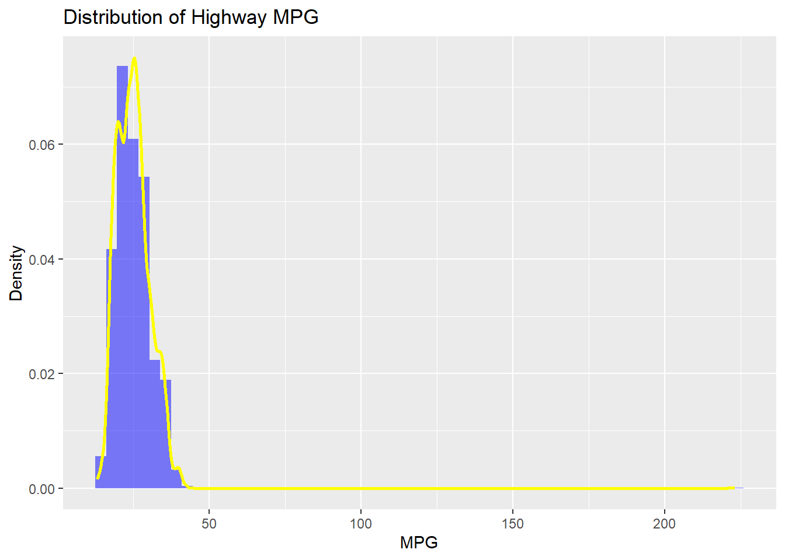
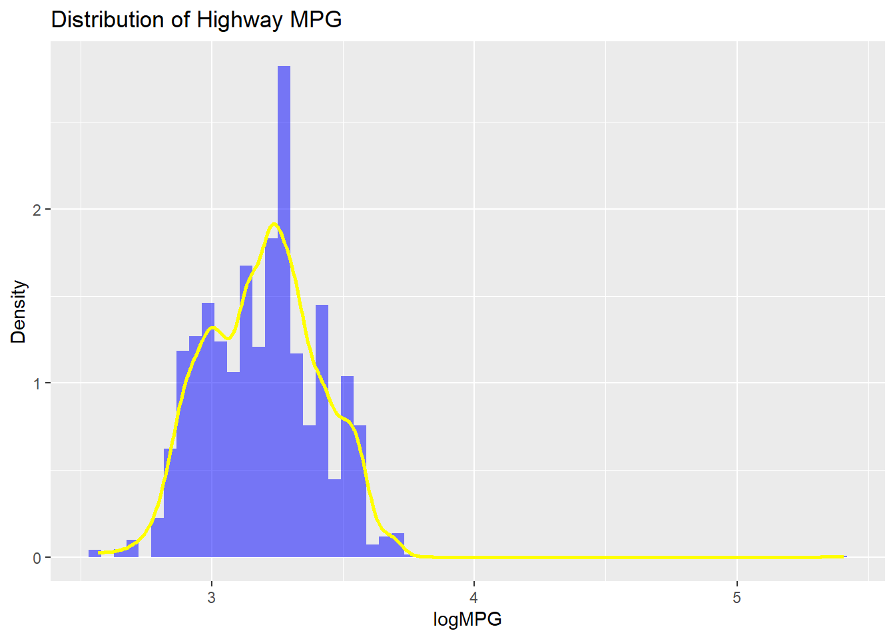
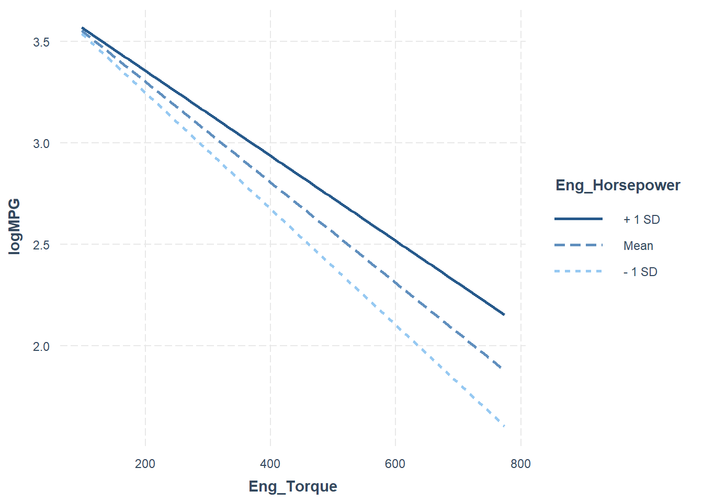

library(ggplot2)
library(interactions)HW2
Github link
https://github.com/yimingliu0117/STATS506
Import the library
Problem 1 - Dice Game
a Version 1 Using loop to define the function.
#' play_dice
#'
#' @param num_rolls
#'
#' @return total winnings
#'
#' @examples
#' play_dice(10)
play_dice <- function(num_rolls) {
# Set the beginning value
ttl_win <- 0
cost <- 2
# Roll the die
for (i in 1:num_rolls) {
roll <- sample(1:6, 1)
if (roll == 3 | roll == 5) {
ttl_win <- ttl_win + (2 * roll) - 2
} else {
ttl_win <- ttl_win - cost
}
}
return(ttl_win)
}
play_dice(10)[1] 2a Version 2 Using Built-in R Vectorized Functions.
#' play_dice_2
#'
#' @param num_rolls
#'
#' @return total winnings
#'
#' @examples
#' play_dice_2(10)
play_dice_2 <- function(num_rolls) {
# Roll the dices at one time and count the winnings
rolls <- sample(1:6, num_rolls, replace = TRUE)
win <- ifelse(rolls == 3 | rolls == 5, 2 * rolls - 2, -2)
ttl_win <- sum(win)
return(ttl_win)
}
play_dice_2(10)[1] 8a Version 3 Implement this by rolling all the dice into one and collapsing the die rolls into a single table().
#' play_dice_3
#'
#' @param num_rolls
#'
#' @return total winnings
#'
#' @examples
#' play_dice_3(10)
play_dice_3 <- function(num_rolls) {
# Roll the dice at one time
# Create the table
rolls <- sample(1:6, num_rolls, replace = TRUE)
roll_table <- table(rolls)
# Set the original value
ttl_win <- 0
cost <- 2
# Check all sample numbers in the table
# Count total winnings using if-else statement
for (roll in 1:6) {
# Avoid NA causes error
# Learn this from google
count <- ifelse(as.character(roll) %in% names(roll_table), roll_table[as.character(roll)], 0)
if (roll == 3 | roll == 5) {
ttl_win <- ttl_win + (2 * roll * count) - (cost * count)
} else {
ttl_win <- ttl_win - (cost * count)
}
}
return(ttl_win)
}
play_dice_3(10)[1] 22a Version 4 Implement this game by using one of the “apply” functions.
#' play_dice_4
#'
#' @param num_rolls
#'
#' @return total winnings
#'
#' @examples
#' play_dice_4(10)
play_dice_4 <- function(num_rolls) {
# Roll the dices at one time
rolls <- sample(1:6, num_rolls, replace = TRUE)
# Use sapply()function to do this with a list
winnings <- sapply(rolls, function(roll) {
if (roll == 3 | roll == 5) {
return(2 * roll - 2)
} else {
return(-2)
}
})
ttl_wins <- sum(winnings)
return(ttl_wins)
}
play_dice_4(10)[1] -14b Input a 3, and once with an input of 3,000. Try these functions.
play_dice(3)[1] 4play_dice_2(3)[1] 4play_dice_3(3)[1] -6play_dice_4(3)[1] 0play_dice(3000)[1] 1960play_dice_2(3000)[1] 1738play_dice_3(3000)[1] 1958play_dice_4(3000)[1] 2204c Demonstrate that the four versions give the same result. Test with inputs 3 and 3,000.
# Use the same seed to control variation.
set.seed(42)
play_dice(3)[1] 4set.seed(42)
play_dice_2(3)[1] 4set.seed(42)
play_dice_3(3)[1] 4set.seed(42)
play_dice_4(3)[1] 4set.seed(42)
play_dice(3000)[1] 1962set.seed(42)
play_dice_2(3000)[1] 1962set.seed(42)
play_dice_3(3000)[1] 1962set.seed(42)
play_dice_4(3000)[1] 1962d Use the “microbenchmark” package to demonstrate the speed of the implementations.
library(microbenchmark)
bench_1000 <- microbenchmark(
Loop = play_dice(1000),
Vectorized = play_dice_2(1000),
Table = play_dice_3(1000),
Apply = play_dice_4(1000),
times = 10
)
bench_100000 <- microbenchmark(
Loop = play_dice(100000),
Vectorized = play_dice_2(100000),
Table = play_dice_3(100000),
Apply = play_dice_4(100000),
times = 10
)
print(bench_1000)Unit: microseconds
expr min lq mean median uq max neval
Loop 2503.6 2560.4 3113.32 3080.20 3626.4 3764.8 10
Vectorized 74.3 78.3 85.21 80.45 87.1 120.4 10
Table 187.0 204.6 225.28 215.20 227.0 325.1 10
Apply 492.5 549.9 631.68 667.30 684.6 696.1 10print(bench_100000)Unit: milliseconds
expr min lq mean median uq max neval
Loop 273.7064 285.9903 301.95376 304.24740 310.3808 334.7413 10
Vectorized 6.4388 7.0295 7.10310 7.19895 7.4073 7.4797 10
Table 6.3259 6.6497 7.10295 7.22340 7.3853 7.8350 10
Apply 52.3967 53.9909 56.74502 55.40800 59.0359 66.2313 10Loop operations can be very time-consuming, while built-in R vectorized functions can significantly enhance computational efficiency. Using the table() function to simplify the loop process can also notably improve performance.
As the amount of computation increases, the time consumed by different functions grows exponentially.
e This game is not a fair game from a mathematical standpoint because players are expected to lose money over time.
The expected money we earned is 1.33, but the cost for one time game is 2, so the net expected earned value is -0.67.
Let’s prove this process using Monte Carlo simulation.
num_rolls <- 100000
#' Monte_game
#'
#' @param num_rolls
#'
#' @return total winnings
#'
#' @examples
#' Monte_game(100000)
Monte_game <- function(num_rolls) {
ttl_win <- 0
for (i in 1:num_rolls) {
roll <- sample(1:6, 1)
if (roll %in% c(3, 5)) {
winnings <- 2 * roll - 2
ttl_win <- ttl_win + winnings
} else {
ttl_win <- ttl_win - 2
}
}
return(ttl_win)
}
Ave_game <- Monte_game(num_rolls) / num_rolls
Ave_game[1] 0.685Problem 2 - Linear Regression
a Import the csv file and change the column names.
#import the csv file
#check the original column names
cars <- read.csv("cars.csv", sep = ",", header = TRUE)
colnames(cars) [1] "Dimensions.Height"
[2] "Dimensions.Length"
[3] "Dimensions.Width"
[4] "Engine.Information.Driveline"
[5] "Engine.Information.Engine.Type"
[6] "Engine.Information.Hybrid"
[7] "Engine.Information.Number.of.Forward.Gears"
[8] "Engine.Information.Transmission"
[9] "Fuel.Information.City.mpg"
[10] "Fuel.Information.Fuel.Type"
[11] "Fuel.Information.Highway.mpg"
[12] "Identification.Classification"
[13] "Identification.ID"
[14] "Identification.Make"
[15] "Identification.Model.Year"
[16] "Identification.Year"
[17] "Engine.Information.Engine.Statistics.Horsepower"
[18] "Engine.Information.Engine.Statistics.Torque" #input the new colnames
colnames_new <- c("Dim_Height",
"Dim_Length",
"Dim_Width",
"Eng_Driveline",
"Eng_Type",
"Eng_Hybrid",
"Eng_Gears",
"Eng_Transmission",
"Fuel_City",
"Fuel_Type",
"Fuel_Highway",
"Iden_Classification",
"Iden_ID",
"Iden_Make",
"Iden_Model_Year",
"Iden_Year",
"Eng_Horsepower",
"Eng_Torque"
)
colnames(cars) <- colnames_new
colnames(cars) [1] "Dim_Height" "Dim_Length" "Dim_Width"
[4] "Eng_Driveline" "Eng_Type" "Eng_Hybrid"
[7] "Eng_Gears" "Eng_Transmission" "Fuel_City"
[10] "Fuel_Type" "Fuel_Highway" "Iden_Classification"
[13] "Iden_ID" "Iden_Make" "Iden_Model_Year"
[16] "Iden_Year" "Eng_Horsepower" "Eng_Torque" b Use subset() function to restrict the data.
cars_gas <- subset(cars, Fuel_Type == "Gasoline")
head(cars_gas) Dim_Height Dim_Length Dim_Width Eng_Driveline
1 140 143 202 All-wheel drive
2 140 143 202 Front-wheel drive
3 140 143 202 Front-wheel drive
4 140 143 202 All-wheel drive
5 140 143 202 All-wheel drive
6 91 17 62 All-wheel drive
Eng_Type Eng_Hybrid Eng_Gears
1 Audi 3.2L 6 cylinder 250hp 236ft-lbs True 6
2 Audi 2.0L 4 cylinder 200 hp 207 ft-lbs Turbo True 6
3 Audi 2.0L 4 cylinder 200 hp 207 ft-lbs Turbo True 6
4 Audi 2.0L 4 cylinder 200 hp 207 ft-lbs Turbo True 6
5 Audi 2.0L 4 cylinder 200 hp 207 ft-lbs Turbo True 6
6 Audi 3.2L 6 cylinder 265hp 243 ft-lbs True 6
Eng_Transmission Fuel_City Fuel_Type Fuel_Highway
1 6 Speed Automatic Select Shift 18 Gasoline 25
2 6 Speed Automatic Select Shift 22 Gasoline 28
3 6 Speed Manual 21 Gasoline 30
4 6 Speed Automatic Select Shift 21 Gasoline 28
5 6 Speed Automatic Select Shift 21 Gasoline 28
6 6 Speed Manual 16 Gasoline 27
Iden_Classification Iden_ID Iden_Make Iden_Model_Year
1 Automatic transmission 2009 Audi A3 3.2 Audi 2009 Audi A3
2 Automatic transmission 2009 Audi A3 2.0 T AT Audi 2009 Audi A3
3 Manual transmission 2009 Audi A3 2.0 T Audi 2009 Audi A3
4 Automatic transmission 2009 Audi A3 2.0 T Quattro Audi 2009 Audi A3
5 Automatic transmission 2009 Audi A3 2.0 T Quattro Audi 2009 Audi A3
6 Manual transmission 2009 Audi A5 3.2 Audi 2009 Audi A5
Iden_Year Eng_Horsepower Eng_Torque
1 2009 250 236
2 2009 200 207
3 2009 200 207
4 2009 200 207
5 2009 200 207
6 2009 265 243cFirst, we observe the characteristics of this dataset through visualization.
#draw the histogram and density plots
ggplot(cars_gas, aes(x = Fuel_Highway)) +
geom_histogram(bins = 60, fill = "blue", alpha = 0.5, aes(y =after_stat(density))) +
geom_density(aes(y =after_stat(density)), color = "yellow", alpha = 0.5, size = 1) +
labs(title = "Distribution of Highway MPG", x = "MPG", y = "Density")Warning: Using `size` aesthetic for lines was deprecated in ggplot2 3.4.0.
ℹ Please use `linewidth` instead.
Through the visualization, we can intuitively see that this dataset is right-skewed, so I choose to apply the logarithm function for correction.
cars_gas$logMPG <- log(cars_gas$Fuel_Highway)
ggplot(cars_gas, aes(x = logMPG)) +
geom_histogram(bins = 60, fill = "blue", alpha = 0.5, aes(y =after_stat(density))) +
geom_density(aes(y =after_stat(density)), color = "yellow", alpha = 0.5, size = 1) +
labs(title = "Distribution of Highway MPG", x = "logMPG", y = "Density")
d Fit a linear regression model.
#transform the year into factor
cars_gas$Iden_Year <- as.factor(cars_gas$Iden_Year)
#fit the linear model
model_1 <- lm(logMPG ~ Eng_Torque + Eng_Horsepower + Dim_Width + Dim_Height + Dim_Length + Iden_Year, data = cars_gas)
#get the summary
summary(model_1)
Call:
lm(formula = logMPG ~ Eng_Torque + Eng_Horsepower + Dim_Width +
Dim_Height + Dim_Length + Iden_Year, data = cars_gas)
Residuals:
Min 1Q Median 3Q Max
-0.54759 -0.09385 -0.00414 0.09894 2.41852
Coefficients:
Estimate Std. Error t value Pr(>|t|)
(Intercept) 3.507e+00 2.216e-02 158.236 < 2e-16 ***
Eng_Torque -2.294e-03 6.757e-05 -33.956 < 2e-16 ***
Eng_Horsepower 9.238e-04 6.984e-05 13.227 < 2e-16 ***
Dim_Width -8.722e-05 2.774e-05 -3.144 0.00168 **
Dim_Height 4.050e-04 3.456e-05 11.719 < 2e-16 ***
Dim_Length 3.475e-05 2.710e-05 1.282 0.19980
Iden_Year2010 -2.181e-02 2.076e-02 -1.051 0.29342
Iden_Year2011 -2.430e-03 2.072e-02 -0.117 0.90665
Iden_Year2012 4.012e-02 2.089e-02 1.921 0.05485 .
---
Signif. codes: 0 '***' 0.001 '**' 0.01 '*' 0.05 '.' 0.1 ' ' 1
Residual standard error: 0.1412 on 4582 degrees of freedom
Multiple R-squared: 0.5638, Adjusted R-squared: 0.563
F-statistic: 740.3 on 8 and 4582 DF, p-value: < 2.2e-16As showed, the relationship between Eng_Torque and logMPG is negative. The torque coefficient is -2.294e-03, which means a unit change in torque will result in -2.294e-03 unit change in logMPG when controlling other factors.
The p-value of torque coefficient is less than 2e-16, which is significant.
e Firstly, I fit the model with interaction. Then choose three values of torque to draw the plot.
#fit the model with interaction
model_2 <- lm(logMPG ~ Eng_Torque * Eng_Horsepower + Dim_Width + Dim_Height + Dim_Length + Iden_Year, data = cars_gas)
summary(model_2)
Call:
lm(formula = logMPG ~ Eng_Torque * Eng_Horsepower + Dim_Width +
Dim_Height + Dim_Length + Iden_Year, data = cars_gas)
Residuals:
Min 1Q Median 3Q Max
-0.55760 -0.08378 -0.00157 0.08194 2.45015
Coefficients:
Estimate Std. Error t value Pr(>|t|)
(Intercept) 3.854e+00 2.384e-02 161.669 < 2e-16 ***
Eng_Torque -3.533e-03 7.615e-05 -46.390 < 2e-16 ***
Eng_Horsepower -2.339e-04 7.632e-05 -3.064 0.00219 **
Dim_Width -1.165e-04 2.561e-05 -4.548 5.55e-06 ***
Dim_Height 2.876e-04 3.215e-05 8.946 < 2e-16 ***
Dim_Length 3.643e-05 2.500e-05 1.457 0.14525
Iden_Year2010 -2.563e-02 1.915e-02 -1.338 0.18095
Iden_Year2011 -5.886e-03 1.912e-02 -0.308 0.75822
Iden_Year2012 3.640e-02 1.927e-02 1.889 0.05896 .
Eng_Torque:Eng_Horsepower 3.939e-06 1.391e-07 28.314 < 2e-16 ***
---
Signif. codes: 0 '***' 0.001 '**' 0.01 '*' 0.05 '.' 0.1 ' ' 1
Residual standard error: 0.1302 on 4581 degrees of freedom
Multiple R-squared: 0.6288, Adjusted R-squared: 0.628
F-statistic: 862.1 on 9 and 4581 DF, p-value: < 2.2e-16#choose 100, 150, 200 as three values of torque
interact_plot(model_2, pred = Eng_Torque,
modx = Eng_Horsepower,
pred.values = c(100, 150, 200),
at = list(Iden_Year = '2010'),
data = cars_gas)
f Firstly, I create the matrix model. Then I use the equation beta_hat = (X’X)^-1 X’y to calculate beta_hat.
# Create design matrix
X <- model.matrix(~ Eng_Torque * Eng_Horsepower + Dim_Width + Dim_Height + Dim_Length + Iden_Year, data = cars_gas)
# Response variable
y <- cars_gas$logMPG
# Calculate coefficients using matrix algebra
beta_hat <- solve(t(X) %*% X) %*% t(X) %*% y
# Compare with lm results
beta_hat [,1]
(Intercept) 3.853858e+00
Eng_Torque -3.532564e-03
Eng_Horsepower -2.338557e-04
Dim_Width -1.165031e-04
Dim_Height 2.876238e-04
Dim_Length 3.642612e-05
Iden_Year2010 -2.562770e-02
Iden_Year2011 -5.886154e-03
Iden_Year2012 3.640253e-02
Eng_Torque:Eng_Horsepower 3.939306e-06The results from model_2:
summary(model_2)$coefficients Estimate Std. Error t value Pr(>|t|)
(Intercept) 3.853858e+00 2.383802e-02 161.6685280 0.000000e+00
Eng_Torque -3.532564e-03 7.614878e-05 -46.3902908 0.000000e+00
Eng_Horsepower -2.338557e-04 7.631556e-05 -3.0643247 2.194312e-03
Dim_Width -1.165031e-04 2.561477e-05 -4.5482782 5.548345e-06
Dim_Height 2.876238e-04 3.215199e-05 8.9457540 5.263802e-19
Dim_Length 3.642612e-05 2.500469e-05 1.4567715 1.452480e-01
Iden_Year2010 -2.562770e-02 1.915307e-02 -1.3380462 1.809478e-01
Iden_Year2011 -5.886154e-03 1.912129e-02 -0.3078325 7.582238e-01
Iden_Year2012 3.640253e-02 1.927141e-02 1.8889390 5.896311e-02
Eng_Torque:Eng_Horsepower 3.939306e-06 1.391271e-07 28.3144374 1.139396e-162They are the same.